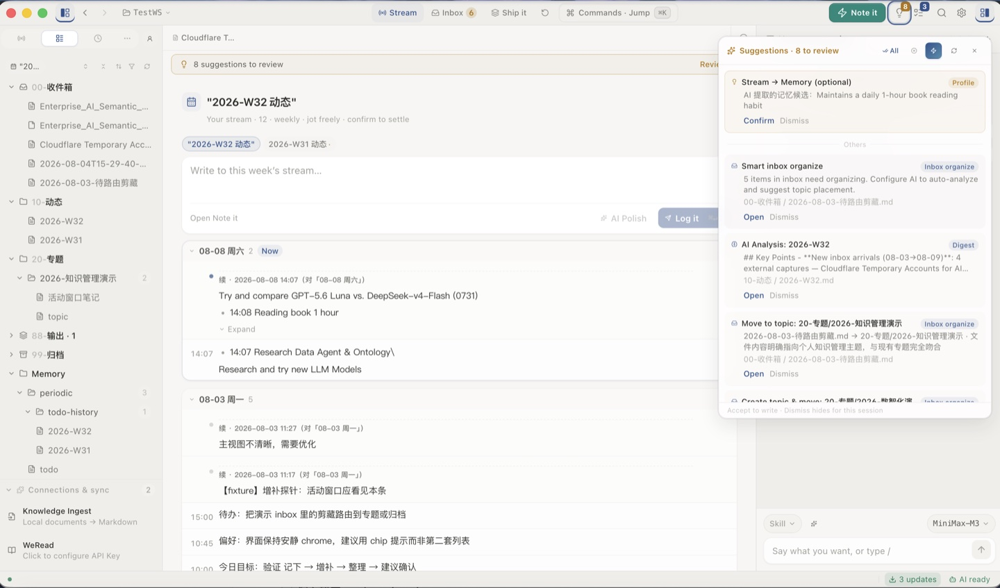
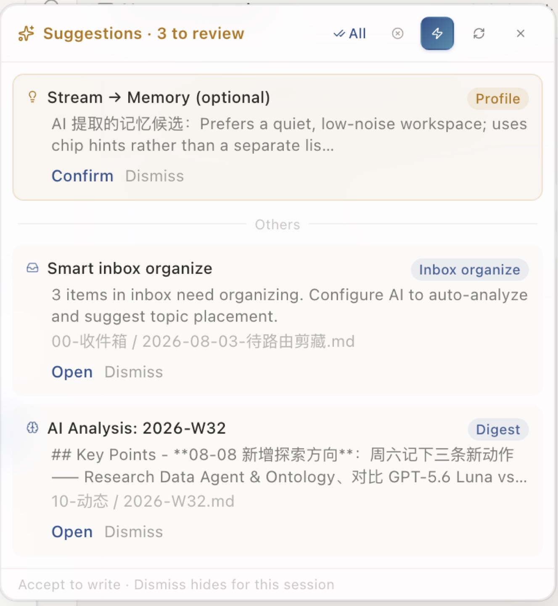
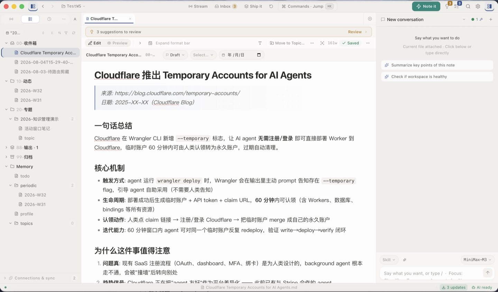
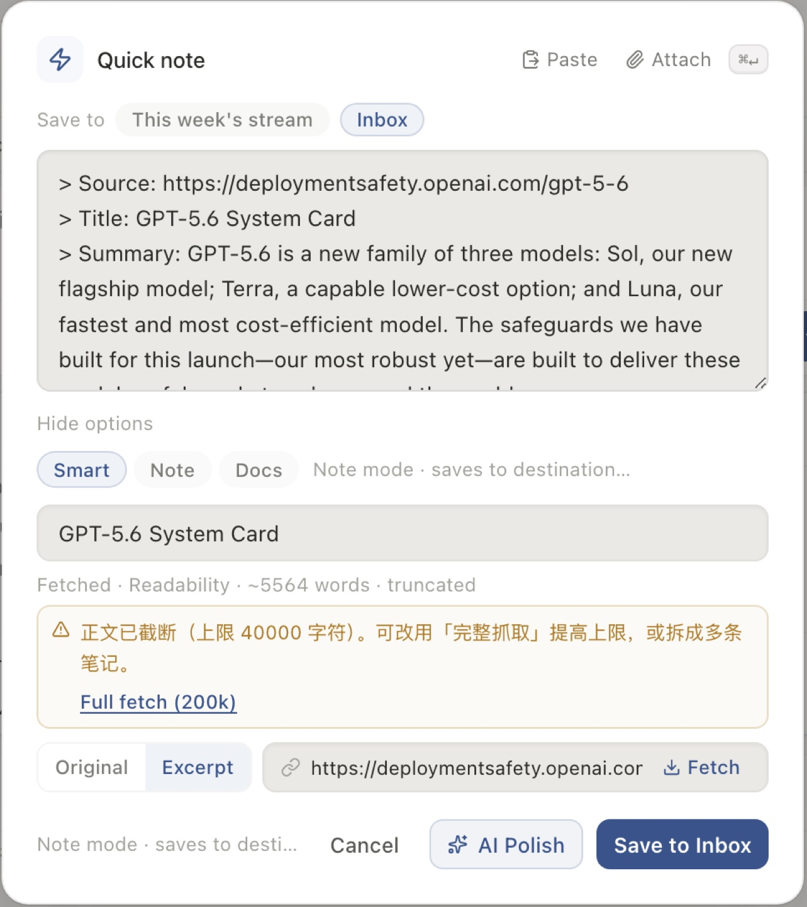
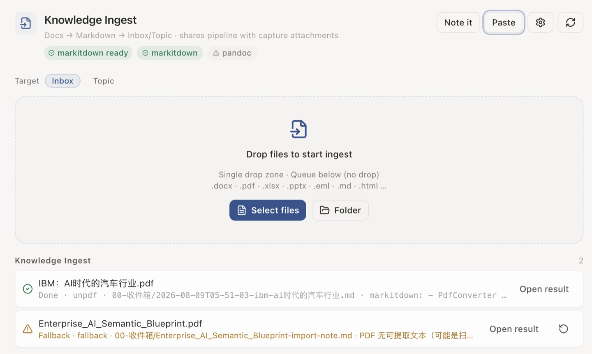
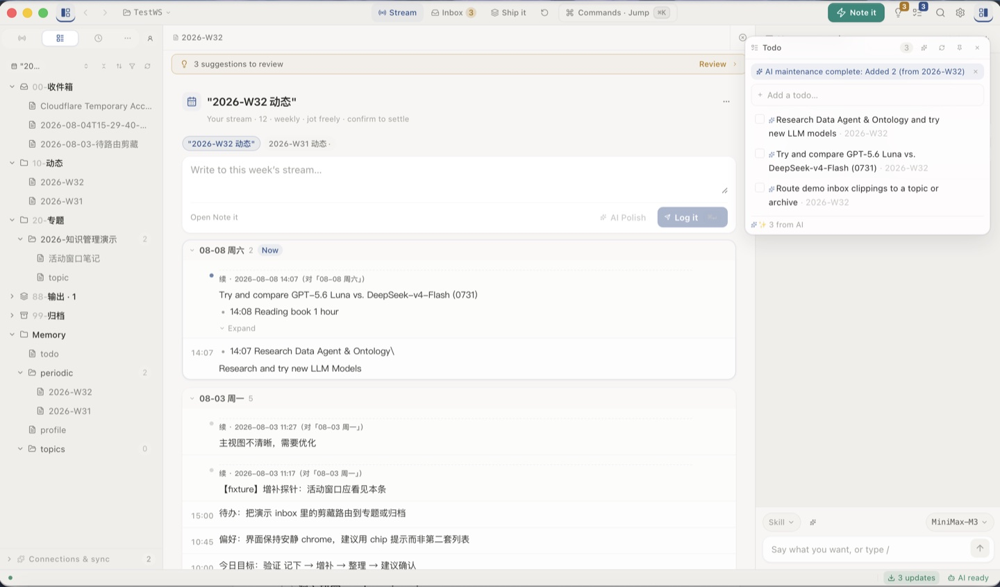

随时记录，零负担
突发想法、网页剪藏、文档抓取与起草创作，一站式自然完成，不再为"放在哪里"而犹豫。
从动态流到 AI 确认，从编辑器到快速捕获——一览 Topmind Desktop 的真实工作界面。点击图片可放大查看。






传统笔记软件的知识维护过于繁琐——大量精力被消耗在手动分类、打标签与建构双链上。Topmind 打造的是一个低摩擦、灵活且一站式的个人知识与工作管理工具。
突发想法、网页剪藏、文档抓取与起草创作，一站式自然完成，不再为"放在哪里"而犹豫。
默认呈现动态时间轴。随手记下，不需要在创作前做出复杂的目录与归档决策。
开启 AI 时，系统感知工作区上下文，主动给出恰到好处的知识整理与待办建议——AI 负责建议与搬砖，用户掌握最终裁决权。
纯标准 Markdown 文件夹存储。文件即真源，永远存放在本地磁盘，无专有数据库绑定。
一条完整的个人知识流转闭环，从零摩擦捕捉到安全归档，每一步都有明确的默认落点。
快捷键速记 · 网页剪藏 · Office/PDF 入队，零摩擦极速捕捉。
编辑 · 行内 AI · 侧栏 Agent · 整理专题，动态卡片流与专题沉淀。
写出成品 · 确认后写入 profile / topics，产出成品文件，更新个人画像。
搜索 · 恢复 · 周期维护，安全归档与快速检索。
Topmind 由四个核心表面与一个剪藏扩展组成，共享内容约定与行为契约。选择你的入口，一键安装上手。
独立桌面应用，提供动态主表面、可视化 AI 确认界面与完整编辑工作流。⌘N 随时随地极速记一条。
brew install topmindspace/tap/topmind
在现有 Obsidian Vault 中直接使用动态流。支持社区插件市场、BRAT 一键安装与手动安装三种方式。
BRAT → topmindspace/topmind
为 Claude Code / OpenCode / Codex 等 AI Agent 导入 Topmind 技能包，驱动本地知识工作流。
npx skills add topmindspace/topmind -g -y
Terminal 命令行与 MCP Server 环境中的确定性工具集。8 域 28 命令，随 Desktop 打包分发。
npm run utr:list
Chrome / Edge 浏览器扩展，网页一键抓取与正文加工，Desktop 捕获 companion 分发面。
每一项能力都标注真实状态，不做过度承诺。